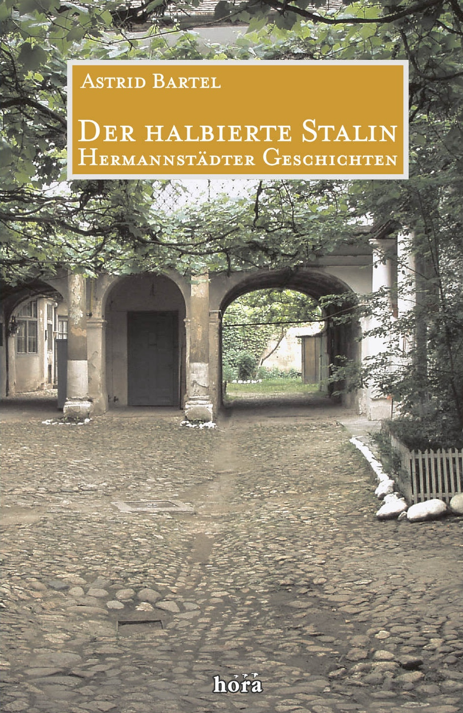

Der halbierte Stalin
Hermannstädter Geschichten

Wo ist denn nur die rote Fahne? Wir suchen
verzweifelt im ganzen Haus. Gleich wird die Polizei
wiederkommen - und noch immer ist nicht geflaggt!
Schließlich muss Klaras weiter, roter Rock dafür geopfert
werden. Wieder eine brenzlige Situation gerettet!
Von schweren und guten Tagen im Hermannstadt der
Nachkriegszeit wird berichtet. Vom "Erblühen" des
Sozialismus, von Enteignung, Lebensmittelrationierung und
politischen Schikanen. Nur im nachbarlichen Zusammenhalt,
im Miteinander über alle Grenzen hinweg von Sprache, Kultur
und Konfession war ein Leben damals möglich. Und die
Hermannstädter konnten dieser schweren Nachkriegszeit sogar
Fröhlichkeit abgewinnen! Für sie war das damals ein Leben
und Überleben mit Mut und Übermut.
Vergnügliche Geschichten vor ernstem Hintergrund im
vielsprachigen Hermannstadt.
Astrid Bartel verlebte ihre Kindheit und Jugend in
Hermannstadt / Sibiu (Rumänien). Als Zwanzigjährige
siedelte sie mit ihren Eltern 1965 nach Deutschland aus. In
Köln studierte sie Germanistik und Geographie. Seit 1975
lebt Astrid Bartel in Berlin. Sie ist verheiratet und hat
vier Söhne.
Astrid Bartel: Der halbierte Stalin
Hermannstädter Geschichten
hora-Verlag, Hermannstadt / Sibiu, 2007
212 Seiten, 18 Zeichnungen
978-973-8226-61-6.
15 Euro
Bestellmöglichkeiten:
Weiteres über "Der halbierte Stalin":